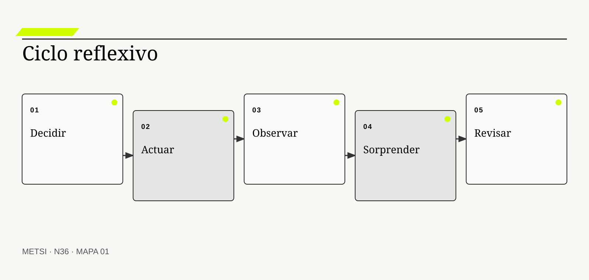
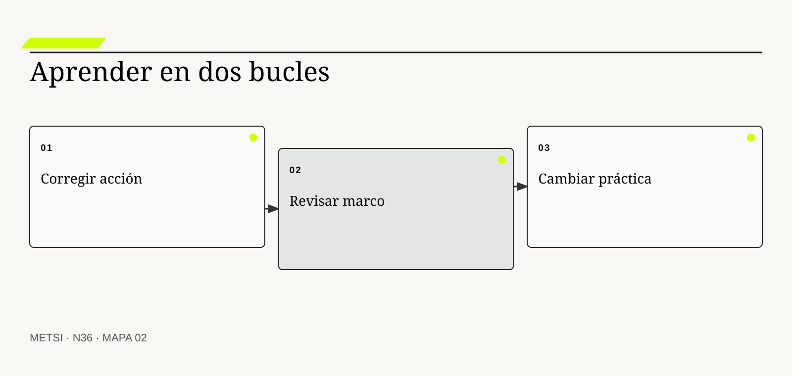
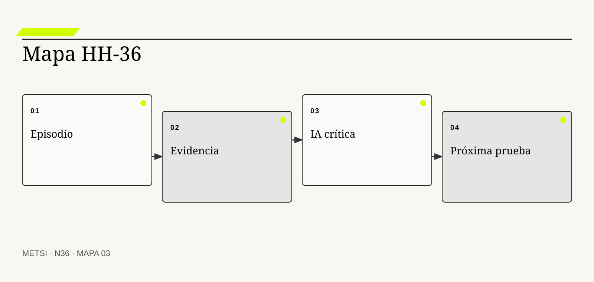

Donald Schön
Fundó una teoría de práctica reflexiva para problemas indeterminados.

N36 cierra el curso con una práctica reflexiva capaz de aprender de decisiones, errores, sorpresas y asistencia de inteligencia artificial sin…
Práctica reflexiva: aprender de decisiones, errores, sorpresas y asistencia de IA
Ruta de lectura: problema, distinciones, decisiones, prueba, transferencia y preparación.
Nota. SIN NUM. identifica aparatos de orientación y referencia.
Seis voces para ampliar, contrastar y discutir N36.
Fundó una teoría de práctica reflexiva para problemas indeterminados.
Distinguen aprendizaje de bucle simple y doble.
Vincula experiencia, investigación y reflexión.
Modela aprendizaje experiencial como ciclo de transformación.
Estudia seguridad psicológica, voz y aprendizaje en equipos.
Analiza transformación de marcos de referencia mediante reflexión crítica.
N36 no resume estas fuentes ni las convierte en receta. Las pone en tensión para construir juicio profesional.
¿Cómo convertir la experiencia de intervenir en una capacidad profesional que aprende sin reescribir el pasado ni delegar la reflexión?

N36 cierra el curso con una práctica reflexiva capaz de aprender de decisiones, errores, sorpresas y asistencia de inteligencia artificial sin delegar el juicio.
Hotel Horizonte reduce la espera y mejora la reparación. La solución cumple sus objetivos. Meses después, una nueva temporada altera el patrón de reservas y una práctica manual que parecía transitoria se vuelve central.
El éxito inicial no vuelve correctas todas las explicaciones. La sorpresa obliga a comparar lo esperado con lo ocurrido, revisar supuestos y reconocer decisiones que produjeron consecuencias no anticipadas.
La reflexión profesional no es una confesión ni una lista de lecciones aprendidas. Reconstruye episodios, distingue resultado de razonamiento y modifica teorías de acción.
La comunidad de práctica conserva un diario de decisiones, realiza revisiones posteriores y prueba cambios. También utiliza IA para explorar hipótesis y criticar borradores, pero registra fuentes, desacuerdos y decisiones propias.
Aprender implica cambiar no sólo una respuesta, sino también las reglas con que se define un problema y se distribuye autoridad.
N36 cierra el curso. Integra decisiones, errores, sorpresas y asistencia de IA en una práctica capaz de seguir aprendiendo después de la materia.
HH-36 compara la promesa, la memoria contrastada esperada y los resultados de la intervención. Identifica sorpresas, reconstruye teorías en uso, separa corrección local de cambio de marco y convierte cada aprendizaje en una práctica verificable. El cierre deja un sistema personal y colectivo de revisión.
N36 cierra el curso con una práctica reflexiva capaz de aprender de decisiones, errores, sorpresas y asistencia de inteligencia artificial sin delegar el juicio.
N35 deja evidencia y decisiones abiertas que N36 utiliza sin reabrir su contenido. N36 cierra el curso con una práctica reflexiva capaz de aprender de decisiones, errores, sorpresas y asistencia de inteligencia artificial sin delegar el juicio.
N36 no clausura una doctrina. Deja un método de aprendizaje profesional: reconstruir situaciones, contrastar explicaciones, intervenir con límites, observar consecuencias y revisar criterios junto con otras personas.
Schön, D. A. permite tratar la revisión del curso de acción como parte del trabajo profesional. En N36, ese aporte pone a prueba decisiones concretas y no funciona como respaldo ornamental. Su alcance se conserva en N36: ninguna referencia sustituye la memoria contrastada del caso ni la autoridad de aprendizaje necesaria para intervenir.
Argyris, C. y Schön, D. A. aportan una fuente contrastable para definir alcance, evidencia y condiciones de revisión. En N36, ese aporte pone a prueba decisiones concretas y no funciona como respaldo ornamental. Su alcance se conserva en N36: ninguna referencia sustituye la memoria contrastada del caso ni la autoridad de aprendizaje necesaria para intervenir.
Dewey, J. aporta una fuente contrastable para definir alcance, evidencia y condiciones de revisión. En N36, ese aporte pone a prueba decisiones concretas y no funciona como respaldo ornamental. Su alcance se conserva en N36: ninguna referencia sustituye la memoria contrastada del caso ni la autoridad de aprendizaje necesaria para intervenir.
Kolb, D. A. aporta una fuente contrastable para definir alcance, evidencia y condiciones de revisión. En N36, ese aporte pone a prueba decisiones concretas y no funciona como respaldo ornamental. Su alcance se conserva en N36: ninguna referencia sustituye la memoria contrastada del caso ni la autoridad de aprendizaje necesaria para intervenir.
Edmondson, A. C. explica condiciones para voz, error y aprendizaje en equipos. En N36, ese aporte pone a prueba decisiones concretas y no funciona como respaldo ornamental. Su alcance se conserva en N36: ninguna referencia sustituye la memoria contrastada del caso ni la autoridad de aprendizaje necesaria para intervenir.
Mezirow, J. analiza revisión crítica de marcos de referencia. En N36, ese aporte pone a prueba decisiones concretas y no funciona como respaldo ornamental. Su alcance se conserva en N36: ninguna referencia sustituye la memoria contrastada del caso ni la autoridad de aprendizaje necesaria para intervenir.
Senge, P. M. aporta una fuente contrastable para definir alcance, evidencia y condiciones de revisión. En N36, ese aporte pone a prueba decisiones concretas y no funciona como respaldo ornamental. Su alcance se conserva en N36: ninguna referencia sustituye la memoria contrastada del caso ni la autoridad de aprendizaje necesaria para intervenir.
Freire, P. aporta una fuente contrastable para definir alcance, evidencia y condiciones de revisión. En N36, ese aporte pone a prueba decisiones concretas y no funciona como respaldo ornamental. Su alcance se conserva en N36: ninguna referencia sustituye la memoria contrastada del caso ni la autoridad de aprendizaje necesaria para intervenir.
NIST incorpora gobierno, medición y manejo del riesgo de inteligencia artificial. En N36, ese aporte pone a prueba decisiones concretas y no funciona como respaldo ornamental. Su alcance se conserva en N36: ninguna referencia sustituye la memoria contrastada del caso ni la autoridad de aprendizaje necesaria para intervenir.
UNESCO integra perspectiva humana, ética, técnica y diseño de sistemas. En N36, ese aporte pone a prueba decisiones concretas y no funciona como respaldo ornamental. Su alcance se conserva en N36: ninguna referencia sustituye la memoria contrastada del caso ni la autoridad de aprendizaje necesaria para intervenir.
Moon, J. A. aporta una fuente contrastable para definir alcance, evidencia y condiciones de revisión. En N36, ese aporte pone a prueba decisiones concretas y no funciona como respaldo ornamental. Su alcance se conserva en N36: ninguna referencia sustituye la memoria contrastada del caso ni la autoridad de aprendizaje necesaria para intervenir.
Wenger, E. aporta una fuente contrastable para definir alcance, evidencia y condiciones de revisión. En N36, ese aporte pone a prueba decisiones concretas y no funciona como respaldo ornamental. Su alcance se conserva en N36: ninguna referencia sustituye la memoria contrastada del caso ni la autoridad de aprendizaje necesaria para intervenir.

La reflexión en la acción examina y modifica el encuadre mientras se interviene. La definición fija el objeto de decisión. Si el equipo de N36 no puede expresar qué compromiso organiza, la categoría funciona como etiqueta y no como instrumento.
No es improvisación sin registro ni aplicación automática de teoría. La distinción evita que una palabra familiar oculte otro mecanismo. En N36, confundirlos cambia qué se observa, qué se acepta como avance y quién debe intervenir.
En reflexión en la acción, el recorrido causal debe mostrar qué condición habilita la acción, qué transformación ocurre y quién absorbe el resultado. Reflexión en la acción se operacionaliza delimitando propósito, población, entradas, autoridad, acción, consecuencia y condición de revisión. El recorrido se contrasta con una alternativa más simple y con un escenario adverso antes de ampliar compromiso. Si un salto depende sólo de una explicación oral, la estrategia todavía no puede gobernarlo.
La evidencia relevante para reflexión en la acción no se limita al resultado promedio. La evidencia integra una prueba previa, resultados desagregados y el episodio siguiente: Recepción adapta una contingencia ante una excepción inédita También conserva las decisiones humanas y automáticas que produjeron ese resultado. N36 busca además casos negativos, diferencias entre poblaciones y señales de que la explicación elegida podría ser insuficiente.
Ejemplo. Recepción adapta una contingencia ante una excepción inédita En N36, el episodio vuelve visible la relación entre ritmo, autoridad, evidencia y capacidad de reparación.
El tradeoff central de reflexión en la acción aparece entre anticipar y preservar opciones. Anticipar puede reducir coordinación y también fijar una premisa prematura; preservar opciones puede producir aprendizaje y también demorar una protección necesaria. La elección debe declarar cuál de esos costos acepta, durante cuánto tiempo y para quién.
La reflexión crítica de reflexión en la acción termina con una pregunta de uso: ¿qué podría decidir ahora una persona que antes no podía? En N36, la respuesta debe nombrar una acción, una restricción y una evidencia, no sólo una comprensión mejorada.
Operacionalizar reflexión en la acción requiere asignar una unidad observable. La comunidad de práctica define qué episodio contará, desde qué momento, con qué población y bajo qué fuente. Después compara al menos un caso ordinario con otro que fuerce excepción. Esta precisión en N36 evita que una conclusión general se sostenga sólo en ejemplos convenientes.
La decisión profesional no termina en adoptar reflexión en la acción. Se compara una ruta principal con una explicación rival, se explicita quién queda expuesto y se conserva un modo de revisar. La presión puede reducir contraste y exige límites previos. El límite forma parte del diseño y no una nota posterior.
La reflexión sobre la acción reconstruye después un episodio y su razonamiento. Conviene comenzar por su función profesional. Si el equipo de N36 no puede expresar qué compromiso organiza, la categoría funciona como etiqueta y no como instrumento.
No es evaluar sólo el resultado ni justificar retrospectivamente. El contraste importa porque conduce a pruebas distintas. En N36, confundirlos cambia qué se observa, qué se acepta como avance y quién debe intervenir.
El mecanismo de reflexión sobre la acción no se presume por el nombre. Reflexión sobre la acción se operacionaliza delimitando propósito, población, entradas, autoridad, acción, consecuencia y condición de revisión. El recorrido se contrasta con una alternativa más simple y con un escenario adverso antes de ampliar compromiso. Debe localizarse dónde comienza, qué relaciones activa, qué demora introduce y qué capacidad de reparación queda disponible cuando la expectativa no se cumple.
Una afirmación sobre reflexión sobre la acción gana fuerza cuando puede reconstruirse desde fuentes independientes. La evidencia integra una prueba previa, resultados desagregados y el episodio siguiente: La comunidad de práctica compara decisión, expectativa y consecuencia También conserva las decisiones humanas y automáticas que produjeron ese resultado. La ausencia de señal también se interpreta: puede significar estabilidad, mala observación o exclusión del caso que más importa.
Ejemplo. La comunidad de práctica compara decisión, expectativa y consecuencia En N36, el episodio vuelve visible la relación entre ritmo, autoridad, evidencia y capacidad de reparación.
La escala modifica reflexión sobre la acción. Una solución válida para un equipo puede fallar cuando atraviesa sedes, turnos o proveedores porque aumenta la distancia entre señal y autoridad. Antes de ampliar, N36 prueba si la misma decisión conserva significado y reparación bajo esa nueva distribución.
Para evitar consenso aparente, reflexión sobre la acción se revisa con alguien afectado y con alguien responsable de reparar. Las dos perspectivas pueden valorar resultados diferentes y obligan a declarar la prioridad elegida.
En la práctica, reflexión sobre la acción atraviesa más de un área. Se identifican handoffs, esperas, decisiones y datos que cada participante puede ver. Cuando dos áreas usan evidencia distinta en N36, el expediente conserva la divergencia hasta determinar si representa error, perspectiva legítima o una brecha que la estrategia debe resolver.
En una revisión, reflexión sobre la acción debe responder tres preguntas: qué mejora, qué desplaza y qué vuelve más difícil de revertir. La memoria es selectiva y necesita trazas y voces múltiples. Si esas respuestas cambian, también debe cambiar el compromiso, aunque el trabajo previo haya sido técnicamente correcto.
La sorpresa es una diferencia significativa entre lo esperado y lo observado. El concepto adquiere valor cuando cambia un cambio de teoría en uso. Si el equipo de N36 no puede expresar qué compromiso organiza, la categoría funciona como etiqueta y no como instrumento.
No todo desvío es error ni todo error produce aprendizaje. Su vecino conceptual puede parecer equivalente y no lo es. En N36, confundirlos cambia qué se observa, qué se acepta como avance y quién debe intervenir.
Comprender sorpresa exige seguir la decisión en el tiempo. Sorpresa se operacionaliza delimitando propósito, población, entradas, autoridad, acción, consecuencia y condición de revisión. El recorrido se contrasta con una alternativa más simple y con un escenario adverso antes de ampliar compromiso. La reconstrucción reflexiva distingue condición, intervención, señal temprana y consecuencia para evitar atribuir a una práctica un efecto producido por otro cambio simultáneo.
La revisión del episodio de sorpresa debe formularse antes de conocer el resultado. La evidencia integra una prueba previa, resultados desagregados y el episodio siguiente: La práctica manual explica un éxito atribuido al software También conserva las decisiones humanas y automáticas que produjeron ese resultado. Se registra qué observación sostendría continuar, cuál obligaría a adaptar y cuál activaría detención o escalamiento.
Ejemplo. La práctica manual explica un éxito atribuido al software En N36, el episodio vuelve visible la relación entre ritmo, autoridad, evidencia y capacidad de reparación.
El tiempo también altera sorpresa. Una evidencia suficiente para explorar puede ser insuficiente para operar de forma permanente. Por eso se separan prueba local, compromiso transitorio y condición estable, y cada estado conserva fecha, alcance y responsable de revisión.
El registro de sorpresa conserva una explicación rival. Si esa alternativa predice mejor el episodio siguiente, el equipo cambia de curso sin reescribir retrospectivamente lo que creía saber.
La gobernanza de sorpresa incluye quién puede proponer, aprobar, ejecutar, observar y reparar. Esas funciones no se presumen por cargo ni por permiso técnico. N36 las prueba en un escenario donde falta la persona habitual, porque una capacidad que sólo funciona con conocimiento privado todavía no pertenece a la organización.
El juicio sobre sorpresa incluye distribución de consecuencias. Normalizar la sorpresa impide revisar el marco. Una mejora agregada no alcanza si concentra espera, riesgo o trabajo invisible en un grupo sin autoridad para discutir la decisión.
La teoría declarada expresa lo que se dice hacer; la teoría en uso se infiere de acciones. La definición fija el objeto de decisión. Si el equipo de N36 no puede expresar qué compromiso organiza, la categoría funciona como etiqueta y no como instrumento.
La diferencia no equivale automáticamente a hipocresía. La distinción evita que una palabra familiar oculte otro mecanismo. En N36, confundirlos cambia qué se observa, qué se acepta como avance y quién debe intervenir.
La explicación operacional de teoría declarada y teoría en uso conecta personas, reglas y tecnología. Teoría declarada y teoría en uso se operacionaliza delimitando propósito, población, entradas, autoridad, acción, consecuencia y condición de revisión. El recorrido se contrasta con una alternativa más simple y con un escenario adverso antes de ampliar compromiso. Esa conexión permite decidir qué parte puede modificarse localmente y cuál requiere coordinación con otras autoridades o capacidades.
Para auditar teoría declarada y teoría en uso, conviene combinar evidencia de diseño, ejecución y consecuencia. La evidencia integra una prueba previa, resultados desagregados y el episodio siguiente: El protocolo promete revisión y el turno evita escalar También conserva las decisiones humanas y automáticas que produjeron ese resultado. Ninguna fuente domina automáticamente; una especificación correcta puede convivir con una operación dañina.
Ejemplo. El protocolo promete revisión y el turno evita escalar En N36, el episodio vuelve visible la relación entre ritmo, autoridad, evidencia y capacidad de reparación.
Existe además una dimensión política en teoría declarada y teoría en uso. La opción más eficiente puede reducir la capacidad de una persona para cuestionar un cambio de teoría en uso o trasladar trabajo sin reconocerlo. N36 registra esa distribución y no la esconde dentro de un indicador agregado.
Una prueba adversa de teoría declarada y teoría en uso introduce demora, ausencia de autoridad o dato incompleto. El objetivo de N36 no es cubrir todas las fallas, sino revelar si la estrategia mantiene una salida segura fuera del camino ordinario.
El indicador de teoría declarada y teoría en uso se elige después de formular la decisión. Puede combinar tiempo, calidad, distribución y costo de reparación. Una cifra aislada rara vez explica el mecanismo. En N36, la lectura conjunta de señales evita optimizar velocidad mientras aumenta retrabajo, exclusión o dependencia.
La condición de cierre de teoría declarada y teoría en uso no es perfección. Observar conducta sin contexto puede atribuir intención incorrecta. Es evidencia suficiente para el uso previsto, riesgo residual aceptado por autoridad y una ruta clara cuando el supuesto deje de cumplirse.

El bucle simple corrige acciones para alcanzar objetivos y reglas vigentes. Conviene comenzar por su función profesional. Si el equipo de N36 no puede expresar qué compromiso organiza, la categoría funciona como etiqueta y no como instrumento.
No cuestiona necesariamente el objetivo ni su distribución. El contraste importa porque conduce a pruebas distintas. En N36, confundirlos cambia qué se observa, qué se acepta como avance y quién debe intervenir.
Para que aprendizaje de bucle simple sea algo más que una etiqueta, debe existir una cadena examinable. Aprendizaje de bucle simple se operacionaliza delimitando propósito, población, entradas, autoridad, acción, consecuencia y condición de revisión. El recorrido se contrasta con una alternativa más simple y con un escenario adverso antes de ampliar compromiso. La cadena incluye supuestos, handoffs y efectos laterales que una descripción ideal suele omitir.
La comunidad de práctica no declara resuelto aprendizaje de bucle simple por acuerdo retórico. La evidencia integra una prueba previa, resultados desagregados y el episodio siguiente: Se ajusta un umbral para reducir falsas alertas También conserva las decisiones humanas y automáticas que produjeron ese resultado. Una persona ajena al diseño debe poder repetir la prueba y comprender por qué el resultado habilita un cambio de teoría en uso concreta.
Ejemplo. Se ajusta un umbral para reducir falsas alertas En N36, el episodio vuelve visible la relación entre ritmo, autoridad, evidencia y capacidad de reparación.
La mantenibilidad de aprendizaje de bucle simple se prueba mediante cambio deliberado. Se modifica una regla, una fuente o una dependencia y se observa quién detecta el impacto, cuánto tarda en responder y qué información necesita. En N36, si la respuesta depende de memoria privada, la capacidad todavía es frágil.
El costo de aprendizaje de bucle simple se observa tanto en presupuesto como en atención, espera, coordinación y dependencia. Lo que no figura en una factura puede seguir siendo el costo que define la viabilidad.
La transición asociada con aprendizaje de bucle simple necesita un estado intermedio explícito. Durante ese período conviven reglas, versiones o capacidades diferentes. N36 declara cuál rige para cada población, cómo se comunica y qué contingencia protege a quien podría quedar entre ambos sistemas.
La reconstrucción reflexiva de aprendizaje de bucle simple evita dos extremos: conservar por inercia y cambiar por identidad metodológica. Corregir puede estabilizar un sistema injusto. Entre ambos queda un cambio de teoría en uso provisional con fecha, responsable y prueba de revisión.
El doble bucle revisa supuestos, objetivos, reglas y autoridad. El concepto adquiere valor cuando cambia un cambio de teoría en uso. Si el equipo de N36 no puede expresar qué compromiso organiza, la categoría funciona como etiqueta y no como instrumento.
No consiste en discutir todo desde cero. Su vecino conceptual puede parecer equivalente y no lo es. En N36, confundirlos cambia qué se observa, qué se acepta como avance y quién debe intervenir.
El valor de aprendizaje de doble bucle aparece al contrastar alternativas. Aprendizaje de doble bucle se operacionaliza delimitando propósito, población, entradas, autoridad, acción, consecuencia y condición de revisión. El recorrido se contrasta con una alternativa más simple y con un escenario adverso antes de ampliar compromiso. Si dos opciones producen el mismo entregable inmediato, el mecanismo permite compararlas por aprendizaje, dependencia, riesgo residual y posibilidad de salida.
La suficiencia de evidencia para aprendizaje de doble bucle depende del costo de equivocarse. La evidencia integra una prueba previa, resultados desagregados y el episodio siguiente: Se redefine éxito para incluir reparación y accesibilidad También conserva las decisiones humanas y automáticas que produjeron ese resultado. A mayor irreversibilidad o desigualdad de daño, mayor contraste, supervisión y autoridad se requieren.
Ejemplo. Se redefine éxito para incluir reparación y accesibilidad En N36, el episodio vuelve visible la relación entre ritmo, autoridad, evidencia y capacidad de reparación.
Finalmente, aprendizaje de doble bucle debe convivir con otras decisiones. Optimizarla de manera aislada puede empeorar flujo, seguridad o comprensión. HH-36 N36 explicita dependencias y evita que una mejora local se presente como outcome completo del sistema.
La revisión de aprendizaje de doble bucle fija fecha y desencadenante. Puede ocurrir por incidente, cambio normativo, nueva población o evidencia acumulada. Sin esa regla en N36, un cambio de teoría en uso provisional se vuelve permanente por olvido.
El cierre de aprendizaje de doble bucle debe sobrevivir a una revisión independiente. La evidencia, las decisiones y los límites se almacenan de manera que otra persona pueda cuestionarlos. En N36, la trazabilidad no busca eliminar desacuerdo; busca que el desacuerdo se concentre en supuestos examinables y no en recuerdos incompatibles.
La práctica reflexiva debe poder explicar por qué aprendizaje de doble bucle recibe cierta inversión y no otra. Cambiar el marco requiere legitimidad y puede encontrar resistencia. Esa explicación conecta valor, costo, aprendizaje y reparación, y permanece abierta a evidencia nueva.
El diario conserva contexto, alternativas, evidencia, confianza y revisión. La definición fija el objeto de decisión. Si el equipo de N36 no puede expresar qué compromiso organiza, la categoría funciona como etiqueta y no como instrumento.
No es una bitácora de actividad ni vigilancia individual. La distinción evita que una palabra familiar oculte otro mecanismo. En N36, confundirlos cambia qué se observa, qué se acepta como avance y quién debe intervenir.
En diario de decisiones, el recorrido causal debe mostrar qué condición habilita la acción, qué transformación ocurre y quién absorbe el resultado. Diario de decisiones se operacionaliza delimitando propósito, población, entradas, autoridad, acción, consecuencia y condición de revisión. El recorrido se contrasta con una alternativa más simple y con un escenario adverso antes de ampliar compromiso. Si un salto depende sólo de una explicación oral, la estrategia todavía no puede gobernarlo.
La evidencia relevante para diario de decisiones no se limita al resultado promedio. La evidencia integra una prueba previa, resultados desagregados y el episodio siguiente: Una decisión de autonomía registra qué la haría retroceder También conserva las decisiones humanas y automáticas que produjeron ese resultado. N36 busca además casos negativos, diferencias entre poblaciones y señales de que la explicación elegida podría ser insuficiente.
Ejemplo. Una decisión de autonomía registra qué la haría retroceder En N36, el episodio vuelve visible la relación entre ritmo, autoridad, evidencia y capacidad de reparación.
El tradeoff central de diario de decisiones aparece entre anticipar y preservar opciones. Anticipar puede reducir coordinación y también fijar una premisa prematura; preservar opciones puede producir aprendizaje y también demorar una protección necesaria. La elección debe declarar cuál de esos costos acepta, durante cuánto tiempo y para quién.
La reflexión crítica de diario de decisiones termina con una pregunta de uso: ¿qué podría decidir ahora una persona que antes no podía? En N36, la respuesta debe nombrar una acción, una restricción y una evidencia, no sólo una comprensión mejorada.
Operacionalizar diario de decisiones requiere asignar una unidad observable. La comunidad de práctica define qué episodio contará, desde qué momento, con qué población y bajo qué fuente. Después compara al menos un caso ordinario con otro que fuerce excepción. Esta precisión en N36 evita que una conclusión general se sostenga sólo en ejemplos convenientes.
La decisión profesional no termina en adoptar diario de decisiones. Se compara una ruta principal con una explicación rival, se explicita quién queda expuesto y se conserva un modo de revisar. Registrar demasiado puede volver invisible lo importante. El límite forma parte del diseño y no una nota posterior.
La revisión posterior estudia condiciones y mecanismos para mejorar capacidad. Conviene comenzar por su función profesional. Si el equipo de N36 no puede expresar qué compromiso organiza, la categoría funciona como etiqueta y no como instrumento.
No es una búsqueda de culpable ni una cronología ornamental. El contraste importa porque conduce a pruebas distintas. En N36, confundirlos cambia qué se observa, qué se acepta como avance y quién debe intervenir.
El mecanismo de revisión posterior no se presume por el nombre. Revisión posterior se operacionaliza delimitando propósito, población, entradas, autoridad, acción, consecuencia y condición de revisión. El recorrido se contrasta con una alternativa más simple y con un escenario adverso antes de ampliar compromiso. Debe localizarse dónde comienza, qué relaciones activa, qué demora introduce y qué capacidad de reparación queda disponible cuando la expectativa no se cumple.
Una afirmación sobre revisión posterior gana fuerza cuando puede reconstruirse desde fuentes independientes. La evidencia integra una prueba previa, resultados desagregados y el episodio siguiente: Un incidente modifica contrato, entrenamiento y señal También conserva las decisiones humanas y automáticas que produjeron ese resultado. La ausencia de señal también se interpreta: puede significar estabilidad, mala observación o exclusión del caso que más importa.
Ejemplo. Un incidente modifica contrato, entrenamiento y señal En N36, el episodio vuelve visible la relación entre ritmo, autoridad, evidencia y capacidad de reparación.
La escala modifica revisión posterior. Una solución válida para un equipo puede fallar cuando atraviesa sedes, turnos o proveedores porque aumenta la distancia entre señal y autoridad. Antes de ampliar, N36 prueba si la misma decisión conserva significado y reparación bajo esa nueva distribución.
Para evitar consenso aparente, revisión posterior se revisa con alguien afectado y con alguien responsable de reparar. Las dos perspectivas pueden valorar resultados diferentes y obligan a declarar la prioridad elegida.
En la práctica, revisión posterior atraviesa más de un área. Se identifican handoffs, esperas, decisiones y datos que cada participante puede ver. Cuando dos áreas usan evidencia distinta en N36, el expediente conserva la divergencia hasta determinar si representa error, perspectiva legítima o una brecha que la estrategia debe resolver.
En una revisión, revisión posterior debe responder tres preguntas: qué mejora, qué desplaza y qué vuelve más difícil de revertir. Seguridad psicológica no elimina accountability ni reparación. Si esas respuestas cambian, también debe cambiar el compromiso, aunque el trabajo previo haya sido técnicamente correcto.

La práctica deliberada ejercita una capacidad específica con feedback y dificultad creciente. El concepto adquiere valor cuando cambia un cambio de teoría en uso. Si el equipo de N36 no puede expresar qué compromiso organiza, la categoría funciona como etiqueta y no como instrumento.
Repetir tareas habituales no garantiza aprendizaje. Su vecino conceptual puede parecer equivalente y no lo es. En N36, confundirlos cambia qué se observa, qué se acepta como avance y quién debe intervenir.
Comprender práctica deliberada exige seguir la decisión en el tiempo. Práctica deliberada se operacionaliza delimitando propósito, población, entradas, autoridad, acción, consecuencia y condición de revisión. El recorrido se contrasta con una alternativa más simple y con un escenario adverso antes de ampliar compromiso. La reconstrucción reflexiva distingue condición, intervención, señal temprana y consecuencia para evitar atribuir a una práctica un efecto producido por otro cambio simultáneo.
La revisión del episodio de práctica deliberada debe formularse antes de conocer el resultado. La evidencia integra una prueba previa, resultados desagregados y el episodio siguiente: La comunidad de práctica ensaya objeciones y escenarios adversos También conserva las decisiones humanas y automáticas que produjeron ese resultado. Se registra qué observación sostendría continuar, cuál obligaría a adaptar y cuál activaría detención o escalamiento.
Ejemplo. La comunidad de práctica ensaya objeciones y escenarios adversos En N36, el episodio vuelve visible la relación entre ritmo, autoridad, evidencia y capacidad de reparación.
El tiempo también altera práctica deliberada. Una evidencia suficiente para explorar puede ser insuficiente para operar de forma permanente. Por eso se separan prueba local, compromiso transitorio y condición estable, y cada estado conserva fecha, alcance y responsable de revisión.
El registro de práctica deliberada conserva una explicación rival. Si esa alternativa predice mejor el episodio siguiente, el equipo cambia de curso sin reescribir retrospectivamente lo que creía saber.
La gobernanza de práctica deliberada incluye quién puede proponer, aprobar, ejecutar, observar y reparar. Esas funciones no se presumen por cargo ni por permiso técnico. N36 las prueba en un escenario donde falta la persona habitual, porque una capacidad que sólo funciona con conocimiento privado todavía no pertenece a la organización.
El juicio sobre práctica deliberada incluye distribución de consecuencias. La práctica sin conexión con trabajo real puede volverse ritual. Una mejora agregada no alcanza si concentra espera, riesgo o trabajo invisible en un grupo sin autoridad para discutir la decisión.
El portfolio selecciona evidencia de cambio de juicio y capacidad. La definición fija el objeto de decisión. Si el equipo de N36 no puede expresar qué compromiso organiza, la categoría funciona como etiqueta y no como instrumento.
No es una colección exhaustiva de entregables. La distinción evita que una palabra familiar oculte otro mecanismo. En N36, confundirlos cambia qué se observa, qué se acepta como avance y quién debe intervenir.
La explicación operacional de portfolio de aprendizaje conecta personas, reglas y tecnología. Portfolio de aprendizaje se operacionaliza delimitando propósito, población, entradas, autoridad, acción, consecuencia y condición de revisión. El recorrido se contrasta con una alternativa más simple y con un escenario adverso antes de ampliar compromiso. Esa conexión permite decidir qué parte puede modificarse localmente y cuál requiere coordinación con otras autoridades o capacidades.
Para auditar portfolio de aprendizaje, conviene combinar evidencia de diseño, ejecución y consecuencia. La evidencia integra una prueba previa, resultados desagregados y el episodio siguiente: Se comparan versiones y razones de un cambio de teoría en uso También conserva las decisiones humanas y automáticas que produjeron ese resultado. Ninguna fuente domina automáticamente; una especificación correcta puede convivir con una operación dañina.
Ejemplo. Se comparan versiones y razones de un cambio de teoría en uso En N36, el episodio vuelve visible la relación entre ritmo, autoridad, evidencia y capacidad de reparación.
Existe además una dimensión política en portfolio de aprendizaje. La opción más eficiente puede reducir la capacidad de una persona para cuestionar un cambio de teoría en uso o trasladar trabajo sin reconocerlo. N36 registra esa distribución y no la esconde dentro de un indicador agregado.
Una prueba adversa de portfolio de aprendizaje introduce demora, ausencia de autoridad o dato incompleto. El objetivo de N36 no es cubrir todas las fallas, sino revelar si la estrategia mantiene una salida segura fuera del camino ordinario.
El indicador de portfolio de aprendizaje se elige después de formular la decisión. Puede combinar tiempo, calidad, distribución y costo de reparación. Una cifra aislada rara vez explica el mecanismo. En N36, la lectura conjunta de señales evita optimizar velocidad mientras aumenta retrabajo, exclusión o dependencia.
La condición de cierre de portfolio de aprendizaje no es perfección. Curar sólo éxitos elimina la memoria contrastada más formativa. Es evidencia suficiente para el uso previsto, riesgo residual aceptado por autoridad y una ruta clara cuando el supuesto deje de cumplirse.
La IA puede proponer rivales, simular objeciones y ayudar a explorar. Conviene comenzar por su función profesional. Si el equipo de N36 no puede expresar qué compromiso organiza, la categoría funciona como etiqueta y no como instrumento.
No es fuente automática, evaluadora neutral ni sustituta de reflexión. El contraste importa porque conduce a pruebas distintas. En N36, confundirlos cambia qué se observa, qué se acepta como avance y quién debe intervenir.
Para que ia como interlocutora crítica sea algo más que una etiqueta, debe existir una cadena examinable. IA como interlocutora crítica se operacionaliza delimitando propósito, población, entradas, autoridad, acción, consecuencia y condición de revisión. El recorrido se contrasta con una alternativa más simple y con un escenario adverso antes de ampliar compromiso. La cadena incluye supuestos, handoffs y efectos laterales que una descripción ideal suele omitir.
La comunidad de práctica no declara resuelto ia como interlocutora crítica por acuerdo retórico. La evidencia integra una prueba previa, resultados desagregados y el episodio siguiente: Un modelo critica el expediente y el estudiante verifica cada objeción También conserva las decisiones humanas y automáticas que produjeron ese resultado. Una persona ajena al diseño debe poder repetir la prueba y comprender por qué el resultado habilita un cambio de teoría en uso concreta.
Ejemplo. Un modelo critica el expediente y el estudiante verifica cada objeción En N36, el episodio vuelve visible la relación entre ritmo, autoridad, evidencia y capacidad de reparación.
La mantenibilidad de ia como interlocutora crítica se prueba mediante cambio deliberado. Se modifica una regla, una fuente o una dependencia y se observa quién detecta el impacto, cuánto tarda en responder y qué información necesita. En N36, si la respuesta depende de memoria privada, la capacidad todavía es frágil.
El costo de ia como interlocutora crítica se observa tanto en presupuesto como en atención, espera, coordinación y dependencia. Lo que no figura en una factura puede seguir siendo el costo que define la viabilidad.
La transición asociada con ia como interlocutora crítica necesita un estado intermedio explícito. Durante ese período conviven reglas, versiones o capacidades diferentes. N36 declara cuál rige para cada población, cómo se comunica y qué contingencia protege a quien podría quedar entre ambos sistemas.
La reconstrucción reflexiva de ia como interlocutora crítica evita dos extremos: conservar por inercia y cambiar por identidad metodológica. La fluidez puede reforzar marcos dominantes e inventar respaldo. Entre ambos queda un cambio de teoría en uso provisional con fecha, responsable y prueba de revisión.
El sistema integra registro, conversación, prueba, feedback y revisión continua. El concepto adquiere valor cuando cambia un cambio de teoría en uso. Si el equipo de N36 no puede expresar qué compromiso organiza, la categoría funciona como etiqueta y no como instrumento.
No depende de motivación individual ni de un curso permanente. Su vecino conceptual puede parecer equivalente y no lo es. En N36, confundirlos cambia qué se observa, qué se acepta como avance y quién debe intervenir.
El valor de sistema de aprendizaje profesional aparece al contrastar alternativas. Sistema de aprendizaje profesional se operacionaliza delimitando propósito, población, entradas, autoridad, acción, consecuencia y condición de revisión. El recorrido se contrasta con una alternativa más simple y con un escenario adverso antes de ampliar compromiso. Si dos opciones producen el mismo entregable inmediato, el mecanismo permite compararlas por aprendizaje, dependencia, riesgo residual y posibilidad de salida.
La suficiencia de evidencia para sistema de aprendizaje profesional depende del costo de equivocarse. La evidencia integra una prueba previa, resultados desagregados y el episodio siguiente: La comunidad revisa casos y actualiza criterios También conserva las decisiones humanas y automáticas que produjeron ese resultado. A mayor irreversibilidad o desigualdad de daño, mayor contraste, supervisión y autoridad se requieren.
Ejemplo. La comunidad revisa casos y actualiza criterios En N36, el episodio vuelve visible la relación entre ritmo, autoridad, evidencia y capacidad de reparación.
Finalmente, sistema de aprendizaje profesional debe convivir con otras decisiones. Optimizarla de manera aislada puede empeorar flujo, seguridad o comprensión. HH-36 N36 explicita dependencias y evita que una mejora local se presente como outcome completo del sistema.
La revisión de sistema de aprendizaje profesional fija fecha y desencadenante. Puede ocurrir por incidente, cambio normativo, nueva población o evidencia acumulada. Sin esa regla en N36, un cambio de teoría en uso provisional se vuelve permanente por olvido.
El cierre de sistema de aprendizaje profesional debe sobrevivir a una revisión independiente. La evidencia, las decisiones y los límites se almacenan de manera que otra persona pueda cuestionarlos. En N36, la trazabilidad no busca eliminar desacuerdo; busca que el desacuerdo se concentre en supuestos examinables y no en recuerdos incompatibles.
La práctica reflexiva debe poder explicar por qué sistema de aprendizaje profesional recibe cierta inversión y no otra. Sin tiempo, seguridad y autoridad, el aprendizaje queda declarado. Esa explicación conecta valor, costo, aprendizaje y reparación, y permanece abierta a evidencia nueva.
El instrumento organiza un cambio de teoría en uso concreta y no una descripción total. Cada campo debe completarse con evidencia disponible, incertidumbre explícita y autoridad identificada. Si un campo todavía no puede responderse, se registra como asunto abierto y no se completa por inferencia.
HH-36 se prueba con un escenario ordinario y uno adverso. Una persona que no participó en su construcción debe poder reconstruir qué se decidió, por qué, qué permanece incierto y cuál es la próxima puerta. El cierre no exige certeza total; exige incertidumbre gobernada y una salida practicable.
Una persona egresada recibe un pedido ambiguo en su primer trabajo. No posee la solución de Hotel Horizonte, pero reconoce actores, evidencia, fronteras, alternativas y condiciones de revisión.
Registra un cambio de teoría en uso provisional, solicita contraste y usa IA para explorar objeciones sin delegar fuentes ni autoridad. Después compara lo esperado con el resultado y actualiza su criterio.
La transferencia final no es recordar treinta y seis respuestas. Es poder construir una intervención defendible y seguir aprendiendo de ella.
Al cerrar un proyecto, el equipo enumera comunicar más, probar antes y mejorar coordinación.
Las frases no nombran episodios, mecanismos, responsables ni cambios observables. Pueden repetirse después de cualquier proyecto y no modifican práctica.
Una lección existe cuando cambia un cambio de teoría en uso, una prueba o una capacidad y queda una señal para revisarla.
La revisión del episodio integral de práctica reflexiva: aprender de decisiones, errores, sorpresas y asistencia de ia toma un cambio de teoría en uso real y la recorre desde su origen hasta una consecuencia observable. Utiliza episodio, expectativa, decisión, evidencia disponible para evitar que el análisis quede dividido en artefactos independientes. Cada afirmación debe encontrar una fuente, una autoridad y una condición de revisión. Cuando dos registros no coinciden, la diferencia se conserva como hallazgo hasta explicar su mecanismo.
El escenario ordinario verifica que n36 cierra el curso con una práctica reflexiva capaz de aprender de decisiones, errores, sorpresas y asistencia de inteligencia artificial sin delegar el juicio. El escenario adverso modifica una dependencia, introduce demora y deja ausente a la persona que suele resolver. La comunidad de práctica observa si la estrategia detecta el cambio, limita el daño, comunica incertidumbre y activa reparación sin recurrir a conocimiento privado.
La comparación incluye una alternativa descartada. Se documenta por qué no fue elegida, qué supuesto la volvería preferible y qué costo tendría recuperarla. Este ejercicio protege opciones futuras y evita presentar la decisión actual como única solución técnicamente posible. También vuelve discutibles los costos hundidos cuando aparece evidencia nueva.
La revisión del episodio concluye con una defensa breve ante una audiencia ajena al equipo. Esa audiencia debe poder reconstruir el problema, objetar la memoria contrastada y comprender por qué la salida propuesta es proporcional. Si sólo puede repetir la recomendación, el expediente todavía no sostiene un cambio de teoría en uso profesional. Si puede reconocer límites y actuar ante una excepción, existe capacidad transferible.
Confundir reflexión con opinión simplifica un cambio de teoría en uso que depende de propósito, evidencia y consecuencia. La velocidad inicial se paga cuando operación descubre el supuesto omitido. El aprendizaje practicable vuelve al episodio, identifica quién absorbe el costo y define una prueba antes de continuar.
Juzgar sólo resultados parece reducir coordinación, pero confunde acuerdo con conocimiento suficiente. La comunidad de práctica debe comparar una explicación rival, localizar autoridad y registrar qué señal cambiaría el curso elegido.
Explicar toda sorpresa como excepción desplaza incertidumbre hacia personas que no participaron de la elección. Corregirlo exige reconstruir el mecanismo, hacer visible el trabajo añadido y establecer una condición de salida proporcional al daño posible.
Reescribir lo que se sabía convierte una práctica en fin. La revisión pregunta qué función debía cumplir, qué evidencia produjo y por qué sigue siendo necesaria. Si la función desapareció, la práctica se adapta o se retira.
Corregir sin revisar objetivos oculta una frontera. El artefacto puede cerrar y la capacidad seguir incompleta. Un escenario adverso permite observar handoffs, excepciones y reparación antes de ampliar compromiso.
Cuestionar todo sin decidir confunde cumplimiento formal con decisión defendible. Se necesita conectar fuente, interpretación, implementación y efecto, incluyendo la autoridad de aprendizaje que acepta el riesgo residual.
Registrar actividad y no razones suele premiar lo visible y dejar fuera mantenimiento, soporte y aprendizaje. El aprendizaje practicable compara el ciclo completo, documenta dependencia y ensaya una salida real.
Buscar culpables reduce diversidad de casos a un promedio conveniente. Se revisan poblaciones, extremos y daños asimétricos para evitar que una mejora global silencie una pérdida crítica.
Practicar sin feedback borra memoria y vuelve inexplicable el cambio de rumbo. Una baseline y un registro breve permiten conservar razones sin inmovilizar la estrategia.
Mostrar sólo éxitos deja responsabilidad sin capacidad. El diseño debe unir permiso, recursos, evidencia y posibilidad de reparar; nombrar un dueño no crea por sí mismo una función operativa.
Delegar crítica a la IA simplifica un cambio de teoría en uso que depende de propósito, evidencia y consecuencia. La velocidad inicial se paga cuando operación descubre el supuesto omitido. El aprendizaje practicable vuelve al episodio, identifica quién absorbe el costo y define una prueba antes de continuar.
Declarar aprendizaje sin capacidad parece reducir coordinación, pero confunde acuerdo con conocimiento suficiente. La comunidad de práctica debe comparar una explicación rival, localizar autoridad y registrar qué señal cambiaría el curso elegido.
N36 cierra el curso con una práctica reflexiva capaz de aprender de decisiones, errores, sorpresas y asistencia de inteligencia artificial sin delegar el juicio. La competencia profesional aparece cuando la elección conserva trazabilidad, expone sus límites y puede ser discutida por quienes deciden, operan y reciben sus consecuencias.

Ningún modelo, expediente o marco elimina incertidumbre, conflicto ni asimetrías de poder.
Ningún modelo, expediente o marco elimina incertidumbre, conflicto ni asimetrías de poder. La evidencia disponible puede ser incompleta, los incentivos pueden desplazar daño y la autoridad de aprendizaje formal puede carecer de capacidad real. La lectura exige declarar esas restricciones, limitar exposición, preservar reparación y fijar una revisión verificable.
N36 no clausura una doctrina. Deja un método de aprendizaje profesional: reconstruir situaciones, contrastar explicaciones, intervenir con límites, observar consecuencias y revisar criterios junto con otras personas.
N36 cierra el curso con una práctica reflexiva capaz de aprender de decisiones, errores, sorpresas y asistencia de inteligencia artificial sin delegar el juicio.
El bloque no propone reemplazar una doctrina por otra. Propone hacer visibles las decisiones que cada práctica organiza, la memoria contrastada que necesita y los daños que puede producir. El resultado es una intervención que puede explicarse, probarse y revisarse.
Reflexión en la acción: la reflexión en la acción examina y modifica el encuadre mientras se interviene.
Reflexión sobre la acción: la reflexión sobre la acción reconstruye después un episodio y su razonamiento.
Sorpresa: la sorpresa es una diferencia significativa entre lo esperado y lo observado.
Teoría declarada y teoría en uso: la teoría declarada expresa lo que se dice hacer; la teoría en uso se infiere de acciones.
Aprendizaje de bucle simple: el bucle simple corrige acciones para alcanzar objetivos y reglas vigentes.
Aprendizaje de doble bucle: el doble bucle revisa supuestos, objetivos, reglas y autoridad.
Diario de decisiones: el diario conserva contexto, alternativas, evidencia, confianza y revisión.
Revisión posterior: la revisión posterior estudia condiciones y mecanismos para mejorar capacidad.
Práctica deliberada: la práctica deliberada ejercita una capacidad específica con feedback y dificultad creciente.
Portfolio de aprendizaje: el portfolio selecciona evidencia de cambio de juicio y capacidad.
IA como interlocutora crítica: la IA puede proponer rivales, simular objeciones y ayudar a explorar.
Sistema de aprendizaje profesional: el sistema integra registro, conversación, prueba, feedback y revisión continua.
Para el encuentro, seleccionar una intervención conocida, completar el instrumento con evidencia verificable y preparar un cambio de teoría en uso provisional. Incluir una explicación rival, una condición que obligaría a revisar y una consecuencia para una persona afectada.